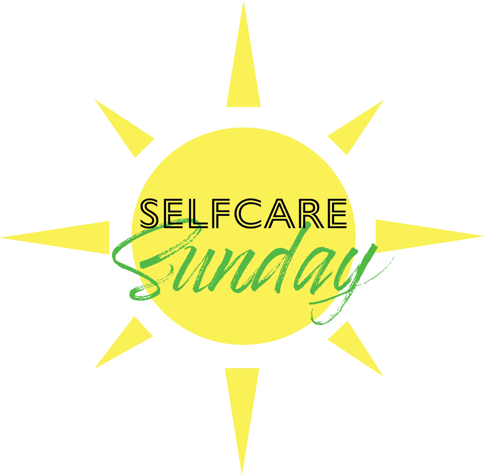

Logos
"Selfcare Sunday" logo
This logo was created for "Selfcare Sunday" - a multimedia, team-based campaign project built around a series of free, virtual, self-care video streams. The sun echoes the word “Sunday”, and is often associated with the future, energy, and an active lifestyle. My colors, typographic and iconographic choices are meant to portray the campaign's positive and casual outlook."Jacqueline Lana Paulino" logo
Logo for “Jacqueline Lanza Paulino” - a brand of elaborate, upscale, and modern skincare. The overall shape is reminiscent of a mirror. The lip illustration came out of the sketching phase and helps identify the brand's focus immediately.
"V Bryzhatova" logo
The logo was made for my personal use on websites, illustrations, and posters. The blue and yellow represent Ukraine, where I’m from.